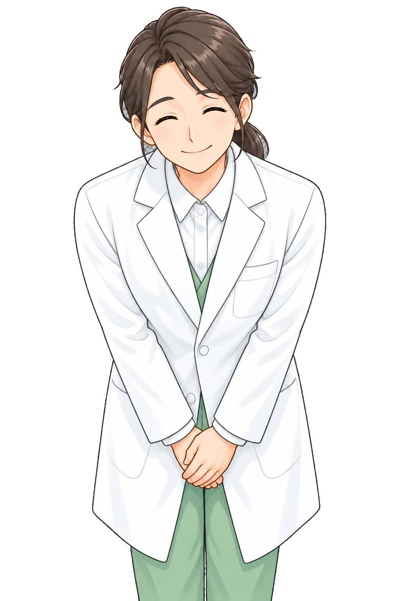

当院について
佐藤医院は、地域の皆様の健康を守り、より良い生活をサポートすることを使命としています。創立以来、私たちは「患者様一人ひとりに寄り添った診療」を大切にし、地域密着型の医療を提供してまいりました。今後も、皆様の健康維持と病気予防に貢献するため、より良い医療サービスを提供し続けることをお約束いたします。
About Us
佐藤医院は、地域の皆様の健康を守り、より良い生活をサポートすることを使命としています。創立以来、私たちは「患者様一人ひとりに寄り添った診療」を大切にし、地域密着型の医療を提供してまいりました。今後も、皆様の健康維持と病気予防に貢献するため、より良い医療サービスを提供し続けることをお約束いたします。

当院の診療方針は、「患者様の声に耳を傾け、共に歩む医療」です。内科を中心にさまざまな疾患へ対応し、症状や的確な診断と丁寧な治療を提供します。患者様との信頼関係を大切に、わかりやすく丁寧な説明を行い、納得いただける診療を第一に考えます。

佐藤医院は、地域の皆様の健康を守るために、長年にわたり地域医療を支えてきました。定期的な健康診断や健康相談を実施し、地域住民の皆様が健康な生活を送れるようサポートしています。病気の治療だけでなく予防の重要性も強く認識し、早期発見・早期治療に努めています。

当院では、子どもから高齢者まですべての年代の患者様に対応し、各世代に必要な医療サービスを提供しています。予防医療や健康相談を通じて、ご家族全員のより良い生活習慣の定着を目指します。

診断精度を高めるため、最新の医療設備を導入し診療に活用しています。必要に応じて適切な検査を行い、迅速に対応します。また、医師・看護師・事務スタッフが一丸となるチーム医療を実現し、スタッフ全員が最新の医療技術の研鑽を積みながら、患者様に最適なケアを提供します。

患者様第一
患者様一人ひとりと向き合い、納得いただける説明を尽くす
健診・予防接種・健康相談で病気を未然に防ぐ
高度な医療機器と最新知識で精度の高い診断・治療を行う
小児から高齢者まで、各年代に必要なケアを提供
気軽に相談できる存在として、健康セミナー等で地域に貢献
個人情報保護と感染症対策・衛生管理を徹底
多職種が連携し、患者様に最適なケアを提供

佐藤医院では、患者様の健康を第一に考え、今後も安心・安全な医療を提供し続けます。どんな小さな悩みでも、お気軽にご相談ください。地域の皆様とともに、より健康で豊かな生活を築いていきたいと考えています。スタッフ一同、皆様のご来院を心よりお待ちしております。